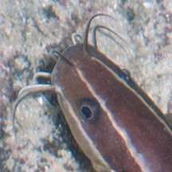
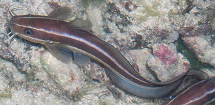
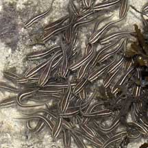
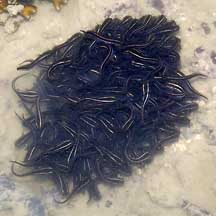
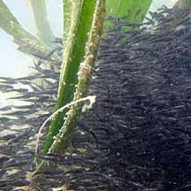
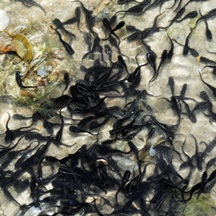
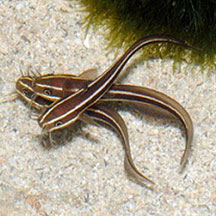

|
|
| fishes text index | photo index |
| Phylum Chordata > Subphylum Vertebrate > fishes > Family Plotosidae |
| Striped
eeltail catfish Plotosus lineatus Family Plotosidae updated Sep 2020
Where seen? This eel-like fish in pajamas is often seen on many of our shores, among seagrasses, coral rubble and near reefs. Tiny to small ones often a ball of many squirming individuals, while larger ones are seen in smaller groups or alone. Sometimes, larger ones can be seen gasping for air at the opening of a burrow at low tide. Features: Adults can reach about 30cm long, those seen on the intertidal range from tiny ones about 1cm, to juveniles about 15cm long. Body long and cylindrical, flattening into an eel-like tail. Colour black, brown or even maroon. Two or three stripes along the body. The white or pale yellow stripes are bright in young fishes and may be faded in old adults. Sometimes confused with Black eeltail catfishes (Plotosus canius). The adults of these two eeltail catfishes may appear similar as the stripes on the Striped eeltail catfish fades with age. In Black eeltail catfish adults, the long barbels at the top of the snout can extend past the eyes. In adult Striped eeltail catfishes, these barbels don't extend past the eyes. Sometimes mistaken for sea snakes or eels (Family Muraenidae). Here's more on how to tell apart sea snakes, eels and eel-like animals. |
 'Whiskers' (barbels) at the top of the snout do not extend past the eyes. |
 Sentosa, Sep 04 |
|
| What does it eat? It forages in the sand for crustaceans, molluscs, worms and sometimes fishes. It is adapted for hunting on the sea bottom in murky waters.The 'whiskers' (barbels) around the mouth do not sting, they help find prey where visibility is poor. The barbels have taste buds to help sense food. The fish also has a keen sense of hearing. Also a strong sense of smell, using their 'noses' (nostril-like openings on the snout). |
|
 Each about 6cm long. Sentosa, Jun 06 |
 Each about 4cm long. Kusu Island, Jun 04 |
 Pulau Semakau, Apr 11 |
| Catfish babies: Striped eeltail
catfishes lay eggs that sink to the bottom (demersal eggs). These
hatch into larvae that drift with the plankton before changing into
little catfishes. Young striped eeltail catfishes are often found swimming together in a 'ball' of hundreds of fishes, constantly moving but remaining in a dense ball. Smaller fishes tend to swim in groups of more individuals. As the fishes get bigger, they are found in smaller groups. Adults are usually seen alone. Human uses: Adults are harvested commercially as a food fish with seine nets on the beach or by trawling and marketed fresh. They are also popular in the live aquarium trade although they eat their tankmates, and even one another, as they get bigger. |
| Striped eeltail catfishes on Singapore shores |
On wildsingapore
flickr
|
| Other sightings on Singapore shores |
 Seringat-Kias, Feb 11 |
 Terumbu Pempang Tengah, Apr 13 Photo shared by Loh Kok Sheng on flickr. |
| Filmed at Pulau
Hantu in Apr 10 Striped Eel-Tailed Catfish from SgBeachBum on Vimeo. |
Links
References
|